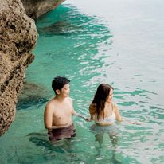
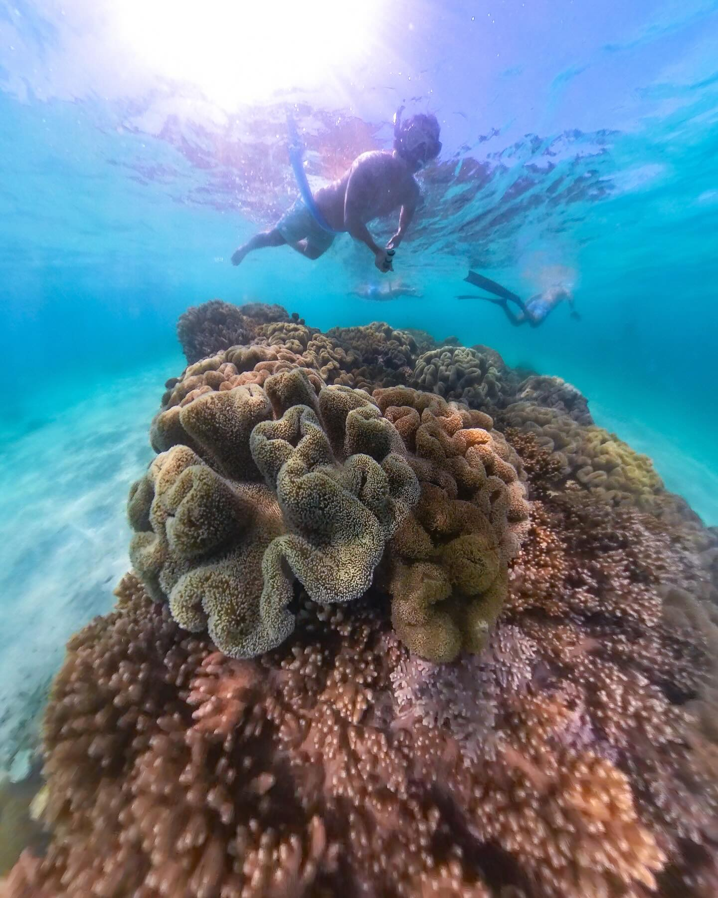
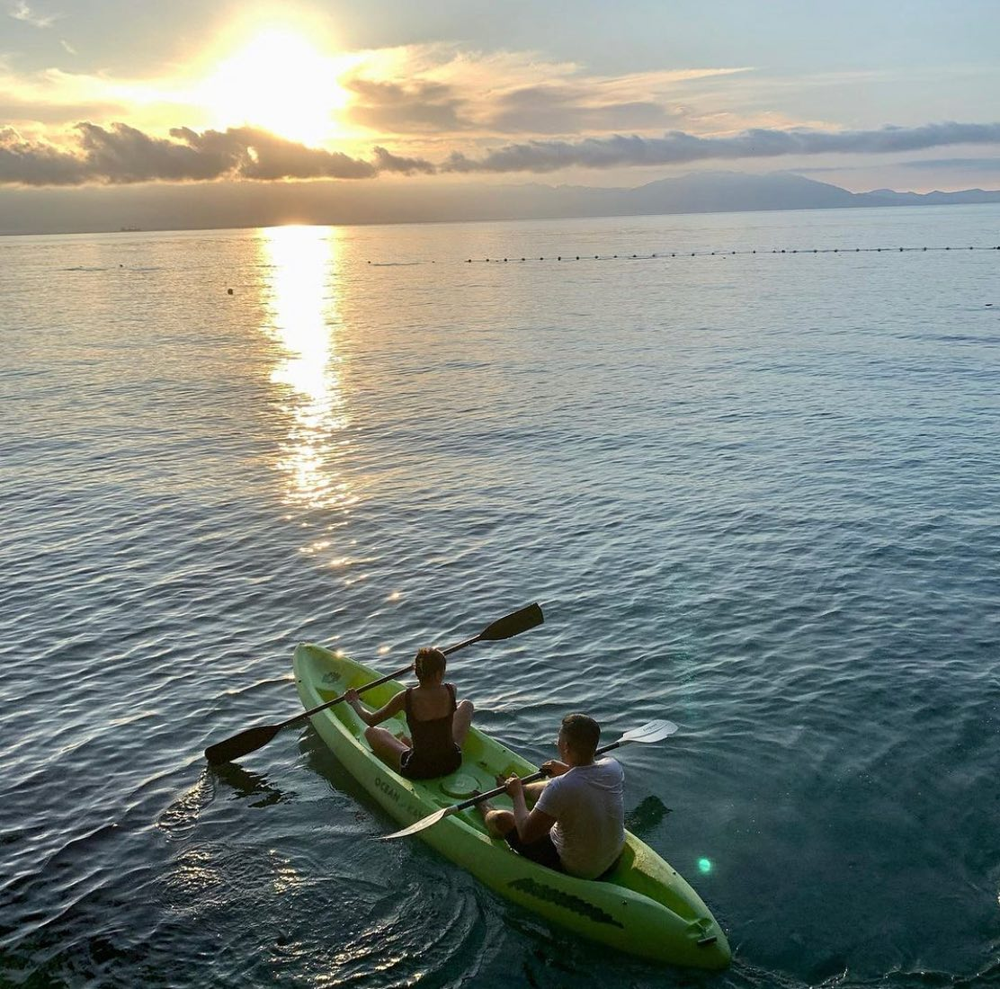

Hayahay Beach Resort
Hayahay Beach on Samal Island is a charming haven, known for its pristine beauty and tranquil atmosphere. Located along the coast of this beautiful island in Samal, the beach boasts powdery white sand that gently glides into the crystal clear waters of the Davao Gulf. Surrounded by lush vegetation and swaying palm trees, Hayahay Beach offers visitors the perfect escape from the hustle and bustle of everyday life. Whether you're lounging under the shade of a palm tree, snorkeling among colorful marine life, or simply soaking in the breathtaking ocean views, Hayahay Beach in Samal Island promises an unforgettable tropical experience. for to all who visit.
Activities
Swimming
The resort itself boasts a beachfront property with a calm shore ideal for wading and casual swimming. The waters are generally clear and free from strong currents, making it suitable for even young children.
Snorkeling
Snorkeling at Hayahay Beach in Samal Island can be a wonderful experience, with clear waters and a healthy marine life to observe.
kayaking
Kayaking is a great way to explore the beautiful coastline of Hayhay Beach in Samal Island. The calm waters around the resort are perfect for kayaking, and you can paddle around the coves and mangroves to see the rich marine life.